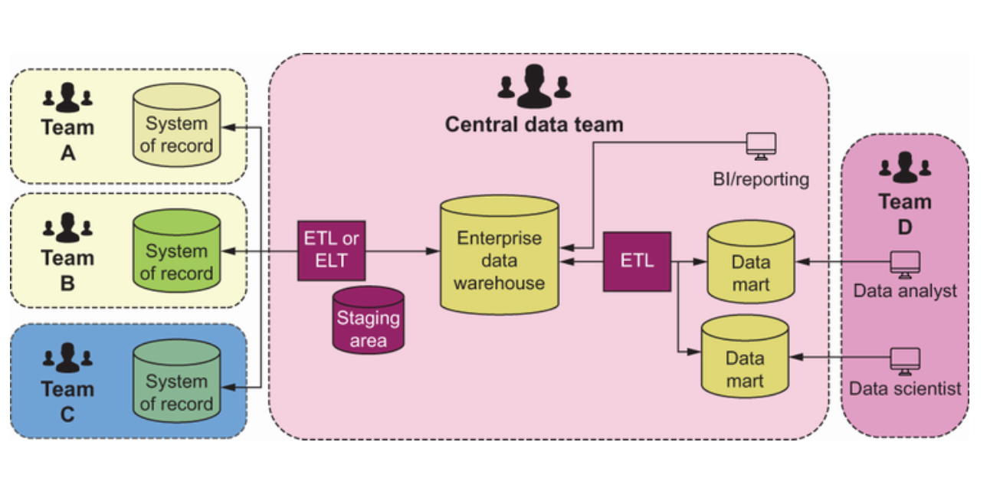
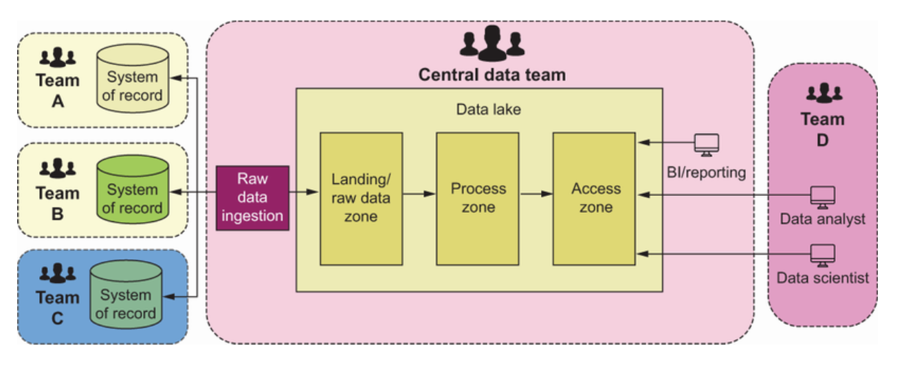
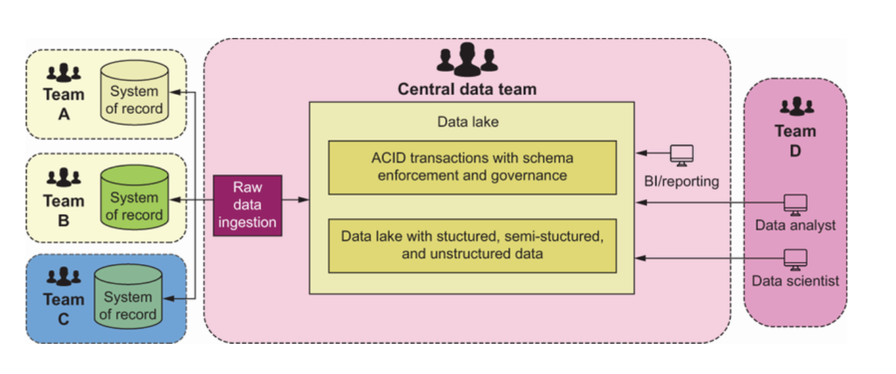
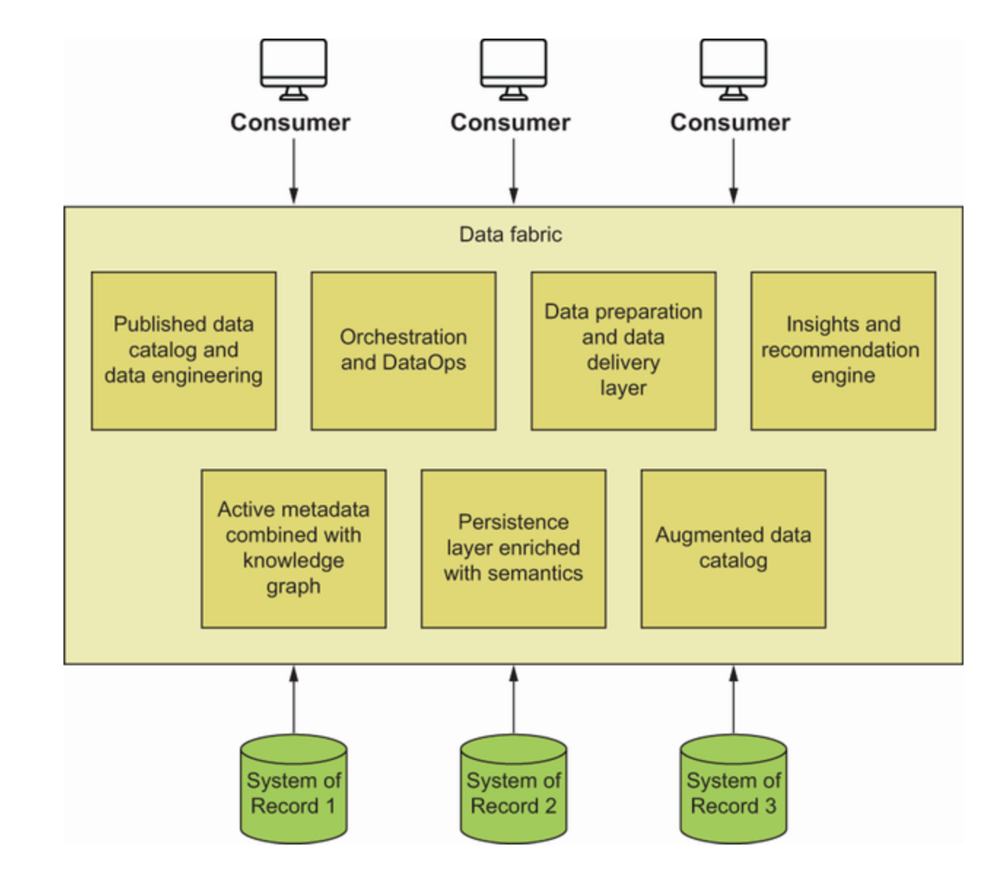
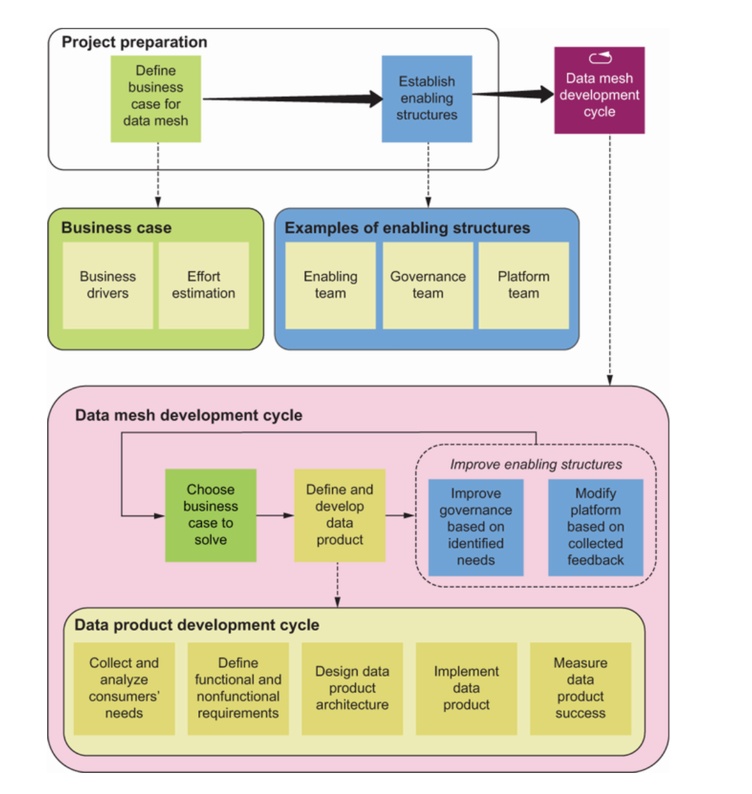
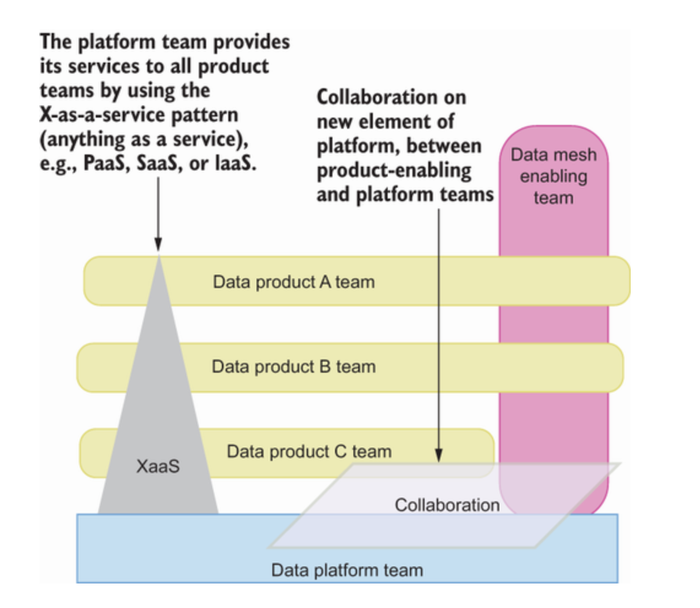
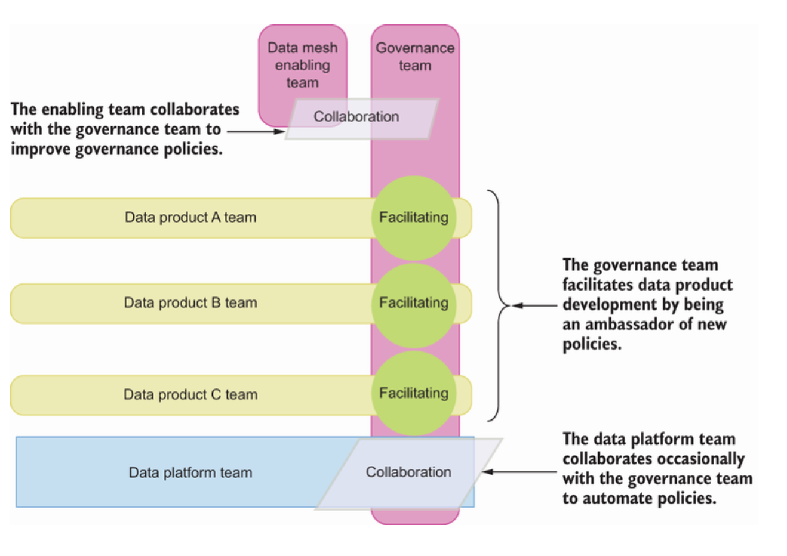

Is Data Mesh right for you?
Decision drivers for data mesh
key Decision Drivers are:-
- Business need
- socio-technically complex organization
- Data Maturity
- Engineering Maturity
- A data mesh is for companies with complex domains
- A data mesh is for companies with diverse data sources
- Data Governance maturity - Easier to implement in companies with higher data governance maturity
- Data mesh is easier to implement in companies in which software is developed in close cooperation with data experts
- Data mesh is easier to implement in companies that are following a domain-driven design approach
Business drivers
- Are we planning to be data driven?
- A data mesh requires a business case and is useful when there are related complex needs
Organizational drivers
- A data mesh is for socio-technically complex organization with complex data needs
Data Maturity Model
- Four stages of Data Maturity
- Descriptive - what happened?
- Diagnostic - why it happened?
- Predictive - what will happen?
- Prescriptive - How to take advantage of what will happen?
- A data mesh is for companies with a certain level of data maturity.
Engineering Maturity
- Level of test automation
- DevOps and CI/CD culture
- Level of embedding security into the development process
- A data mesh is for companies with a high level of software engineering maturity
Domain-data drivers
- A data mesh is for companies with complex domains
- A data mesh is for companies with diverse data sources
Minor drivers
Data Governance Maturity Model
- It divides governance maturity into six tiers:
- Unaware
- Aware
- Reactive
- Proactive
- Managed
- Efficient
Alternatives to Data Mesh
Enterprise data warehouse
Suitable in the following cases:- * Most of the data sources are structured * Well known use cases and not likely to expand * You extract value by using BI or reporting * Small number of unchanging source systems * Central team has expertise in data warehousing

Data lake
Suitable in the following cases:- * Deal with big data * Structured, semi-structured, and unstructured data sources * Hard to foresee all the data use cases * Data sources owned by small number of teams * consumption patterns are not yet established 
Data lakehouse
Features of a lakehouse:- * ACID support * schema enforcement and governance * BI support on top of the same data source

Suitable in the following cases:- * Deal with big data * Structured, semi-structured, and unstructured data sources * Hard to foresee all the data use cases * Data sources owned by small number of teams * consumption patterns are not yet established
The elements of a data mesh may be constructed with existing infrastructure
Data fabric
This is a technology centric solution to data management.It provides a low-code or no-code platform to connect data sources with consumers alongside governance applied on top of it.

Suitable in the following cases:- * You have structured, semi-structured, and unstructured data sources. * You are dealing with big data. * There are many data sources, and they are owned by many teams. * You are dealing with many different ways to consume the data.
Data Mesh Implementation Process



Steps for creating a data mesh
- Choosing a business goal and enable with data
- Define the data products needed
- Develop data product
- Collect feedback about the platform and analyze shared needs
- Establish common policies and improve governance
- Develop the platform
- It should connect data products and data consumers
- Automating the implementation of governance policies